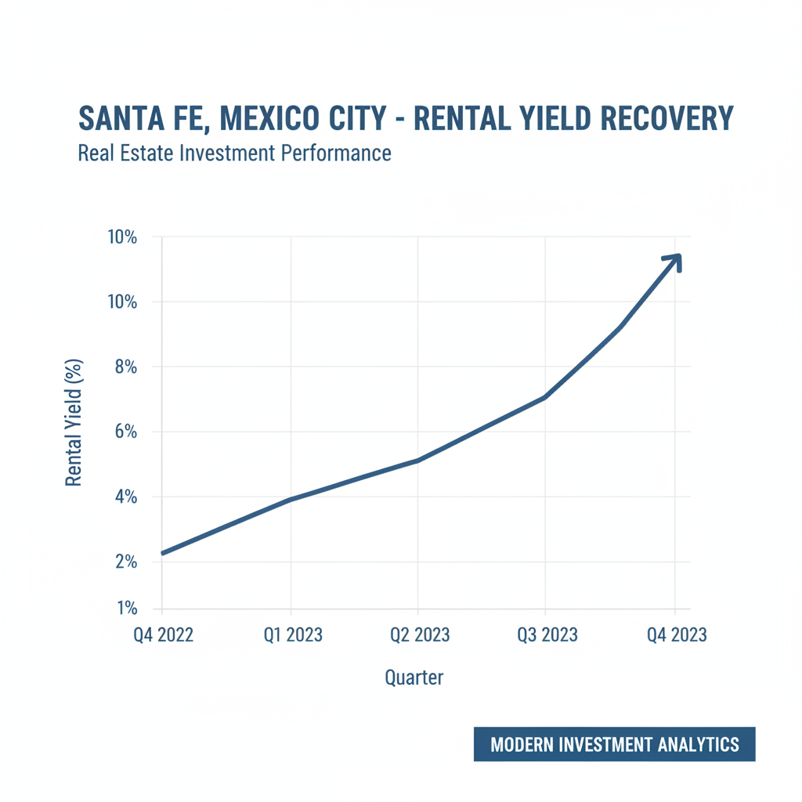

Architectural Guide 2026
Redefining Grandeur: Santa Fe in 2026
From former sand mines to a premier corporate nexus, Santa Fe has fundamentally matured. We navigate its complex layers, from El Insurgente connectivity to intricate legal protocols, ensuring your investment is grounded in empirical 2026 data and architectural excellence. We bridge US NCARB/AIA standards with local CDMX reality, transforming ambition into engineered certainty.


The Resident Architect's View
I might reside in the walkable intimacy of Condesa, but Santa Fe always commands my respect. There's a particular clarity to the light here at five in the afternoon, refracting off the glass towers, that speaks of pure ambition. It’s a neighborhood of decisive lines, where the scale of architecture demands precision. And truthfully, a properly executed meal at Pujol’s Santa Fe outpost—a specific dish? Their mole madre—always reminds me that refinement can thrive even atop former industrial landscapes. The sheer engineering of making this district flourish is, to an architect, utterly captivating.

Erik Martínez, AIA
Principal Architect. Former SHoP Architects NYC. Bringing international precision to CDMX's most complex heritage assets.
Iconic Landmarks
- Parque La Mexicana
- Edificio Samara
- Torre Mayor (Santa Fe)
- Vasco de Quiroga Station
The Santa Fe Paradigm Shift: A 2026 Perspective
Santa Fe, once an audacious urban redevelopment atop former sand mines and sanitary landfills, has fundamentally transitioned. What began as a corporate frontier is now a sophisticated ultra-high-net-worth residential node. The year 2026 marks a decisive inflection point, characterized by the operational maturation of the El Insurgente Interurban Train, a remarkable €5.3 billion federal investment. This transformative infrastructure permanently dismantles Santa Fe's historical isolation, redefining its liveability and investment thesis. The district’s late 20th-century urban plan, emphasizing expansive corporate campuses and residential towers, now converges with hyper-connectivity, creating an unprecedented investment landscape.
Deconstructing the Investment Thesis: ROI & Market Dynamics
The 2026 Santa Fe residential market has entered a mature, balanced phase, exhibiting steady price appreciation of 6.0%–9.0% annually. With 4 to 5 months of active inventory, buyers currently wield superior negotiation leverage. While Polanco maintains higher historical appreciation, Santa Fe offers a compelling entry cost per square meter, ranging from $4,200 – $6,800 USD, significantly lower than Polanco’s $6,500 – $8,500 USD. The compression of the historical appreciation gap between Santa Fe and Polanco, driven by new transit, presents a compelling alpha-generation opportunity for strategic capital deployment. The most desirable "Lifestyle" properties, integrating remote-work spatial capabilities and high-end acoustic amenities, continue to transact rapidly, indicating strong underlying demand from corporate relocations and international nomads.
Geotechnical Realities & Seismic Resilience
While the deeper bedrock of Santa Fe is largely classified as Zone I (Lomas)—composed of compact basaltic and rhyolitic lava flows, offering a mild 0.04g peak ground acceleration for structural design—this geological advantage is often deceptive. Significant portions of the modern district were aggressively terraformed over massive former sand mines and deep sanitary landfills (*rellenos sanitarios*) during the 1980s and 90s. These superficial layers can consist of tens of meters of uncompacted, unstable artificial fill.
For any acquisition, a site-specific Estudio de Mecánica de Suelos (soil mechanics study), costing approximately $35,000 MXN for a single-family lot, is not merely a legal formality but an existential engineering necessity. Should a parcel reside atop artificial fill, the requirement for deep micro-pile foundations reaching down to the basaltic strata will geometrically expand the structural budget, entirely erasing the presumed financial savings of building in a Zone I classification. Our expertise ensures that we meticulously bridge US NCARB/AIA rigorous engineering standards with the profound local knowledge of CDMX’s maistro labor, ensuring seismic resilience and eliminating unforeseen cost overruns.
Navigating Heritage: INAH, INBAL, and the Pueblo de Santa Fe
The towering glass of modern Santa Fe often obscures its 16th-century origins. The original Pueblo de Santa Fe and its surrounding historic *colonias*—including Pueblo de Santa Lucía, Corpus Christy, and Garcimarrero—are meticulously catalogued and fall under the stringent, overlapping authorities of INAH (National Institute of Anthropology and History) for pre-1900 structures, and INBAL (National Institute of Fine Arts and Literature) for 20th-century artistic merit. These are not suggestions; they are Federal Law.
Any architectural intervention, no matter how minor, requires federal authorization. Aesthetic and material constraints are absolute: facades demand traditional piedra volcánica (volcanic stone), restored using federally approved chemical methodologies like **ethyl silicate (TEOS)** consolidation, not simply replaced. Paint palettes must be carefully selected from INAH’s pre-approved, historically accurate catalog, explicitly prohibiting high-contrast, neon, or stark modern industrial aesthetics. Fenestration requires solid wood or traditionally forged ironwork (*herrería*); sleek, imported modern aluminum profiles or PVC extrusions are routinely and summarily rejected. Furthermore, the Pueblo de Santa Fe explicitly bans the entry of heavy cargo vehicles with a maximum gross weight exceeding 5 tons or a longitudinal dimension exceeding 6 meters, forcing costly **micro-transfers** of all construction materials at the zone’s perimeter. We navigate these Heritage Hurdles with deep local relationships and precise technical execution.
Water Autonomy: Mitigating Hydrological Realities
Mexico City's water security, particularly at Santa Fe's high elevation, remains a critical consideration despite the Sistema Cutzamala's dramatic recovery to 95.5%–97% capacity in early 2026. While the system's resilience has been bolstered by historic rainfall and a $10.9 million USD Conagua investment in SCADA systems, Santa Fe intrinsically remains a hydrologically stressed micro-zone. The average high-income resident in CDMX consumes approximately 177 liters of water per day; relying solely on municipal pressure in an elevated district is an unacceptable risk for luxury properties. Our architectural best practice mandates the installation of substantial subterranean cisterns of no less than 10,000 to 15,000 liters, coupled with heavy-duty hydropneumatic pressurization systems and localized thermal or UV purification arrays (operating at a minimum of 75°C to eliminate environmental pathogens), to completely isolate your property from macro-grid volatility and contamination.
Architectural Feasibility: Santa Fe 2026
| Project Type | Avg. Permit Time | Seismic Risk Level | Conservation Status |
|---|---|---|---|
| New Luxury Residential Tower Apartment | 3 - 6 Months (Interior Fit-Out) | Low (Structural Integrity by building management) | High Demand, Rapid Customization |
| Deep Renovation (Non-Heritage H/3/20) | 12 - 18 Months (8-10 months permits + construction) | Medium (Geotechnical, "Gringo Tax") | High Equity Capture Potential |
| Heritage Property Restoration (INAH/INBAL Protected) | 24 - 48 Months (Extensive permitting, specialized labor) | High (Strict compliance, logistical hurdles, cost overruns) | Extreme Authenticity Premium |
Engineered Living: Modernizing for 2026
Renovation in Santa Fe is an exercise in engineering precision. Beyond aesthetics, we prioritize structural integrity, hydrological autonomy, and acoustic insulation. Standard drywall and single-pane glass are entirely insufficient. We integrate specialized acoustic foams, mass-loaded vinyl barriers, and **acoustic concrete integrations** such as the commercially available SoundSorb cladding to achieve acceptable internal decibel levels. For fenestration, **double or triple-glazed units with heavy inert gas fills** are crucial to mitigate the low-frequency rumble of ravine traffic. This commitment ensures your property achieves a level of quiet luxury and operational resilience demanded by the most discerning international clientele.
Interiors: Blending Global Sophistication with Local Craft
Our interior design philosophy for Santa Fe embraces expansive spaces and clean lines, reflecting its modern corporate identity. We blend imported European finishes with bespoke Mexican craftsmanship, utilizing indigenous materials like **Volcanic Travertine** and **Parota hardwoods**. Lighting design is paramount, leveraging natural light from large fenestration and integrating sophisticated smart home automation systems for seamless environmental control. The result is a highly functional, visually striking environment engineered for both high-level executive productivity and serene personal refuge.
The Santa Fe Cheat Sheet
- Best Streets Paseo de la Reforma, Constituyentes, Av. Vasco de Quiroga
- Zoning Code H/3/20 (Residential), HM/4/25 (Mixed-Use)
- Est. Cost / m² MXN $21,000 - $30,000 per m² (Luxury Build Baseline)
- Best Coffee Tierra Garat (Samara Shops) or Blend Station (Parque La Mexicana)
- Local Quirk The specific, highly disruptive auditory signals of the gaseros (commercial trucks delivering LP gas), a necessity due to the lack of centralized subterranean gas lines in many Mexican neighborhoods, serving as a constant acoustic backdrop to the corporate skyline.

The Challenge
The primary challenge in Santa Fe lies in navigating its sharply contrasting realities: the hyper-modern ambition of its corporate towers juxtaposed with deep geological complexities (former landfills), entrenched bureaucratic timelines, and the precise demands of its historic core.
For any new construction or significant alteration, the Manifestación de Construcción Type B permit process is an 8-10 month gauntlet. Furthermore, the Notario Público's drastically enhanced 2026 fiscal enforcement mandate requires transaction validation against an independent, certified commercial appraisal (*avalúo comercial*) prior to closing, completely neutralizing the historical practice of under-declaring transaction values to suppress tax liabilities.
Our Solution
Our solution involves concurrent engineering, initiating the 8-10 month permit phase for the Manifestación de Construcción simultaneously with the architectural executive project, dramatically accelerating capital velocity. We rigorously enforce transparent, itemized unit-pricing (*precios unitarios*) against official labor tabulators, leveraging domestic project management proxies to eliminate the pervasive Gringo Tax and its 20%-50% inflation on initial contractor quotes.
For geological complexities, our highly reputable DRO (Director Responsable de Obra), carrying full civil and potentially criminal liability, meticulously audits site-specific Estudio de Mecánica de Suelos reports and structural calculations, ensuring foundations are precisely engineered for the actual sub-soil conditions, be it firm basalt or former landfill. This proactive technical diligence is your ultimate safeguard, shielding the investment from structural failures, municipal seizure, or the inability to legally register the completed construction.


Planning to Buy?
Don't sign a contract before a technical audit. We offer pre-purchase structural assessments in Santa Fe.
2026 Cost Report
Get our detailed breakdown of current labor and material costs for luxury residential in CDMX.
Start Your Santa Fe Legacy
NYC Precision. Mexican Craft. We eliminate uncertainty for international investors.